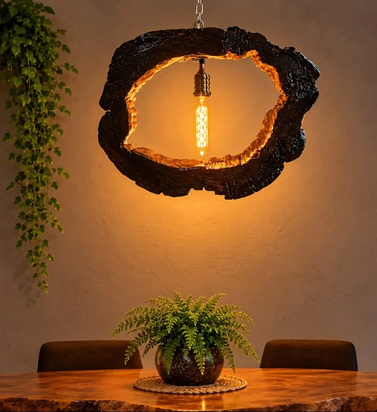
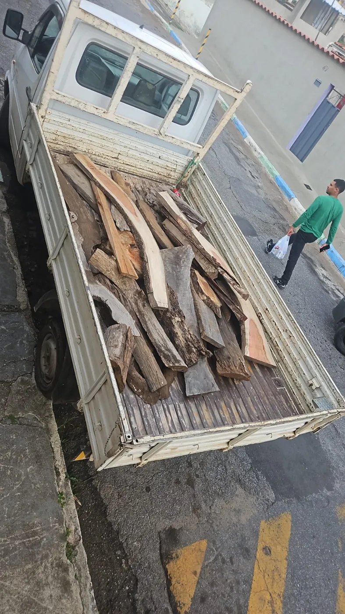
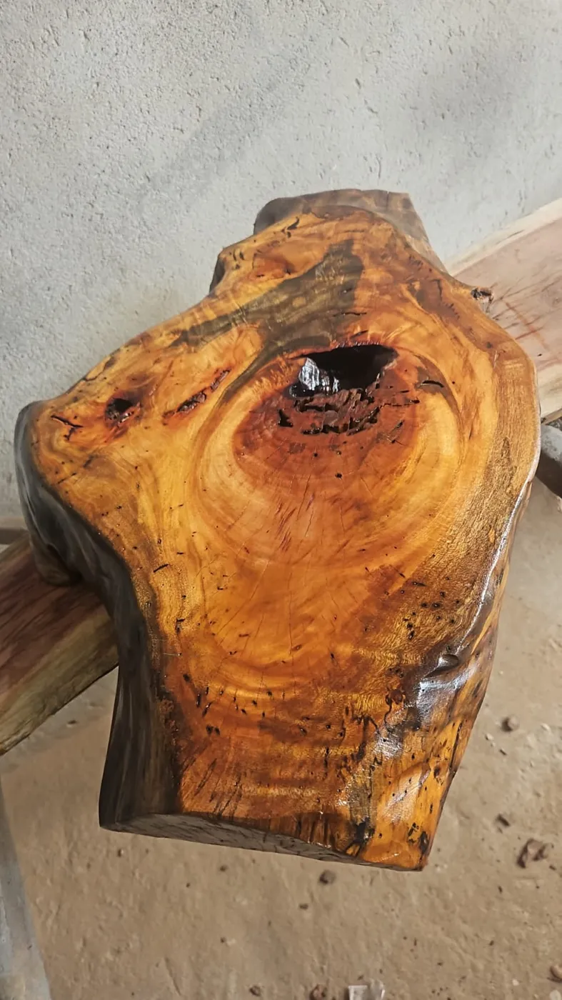
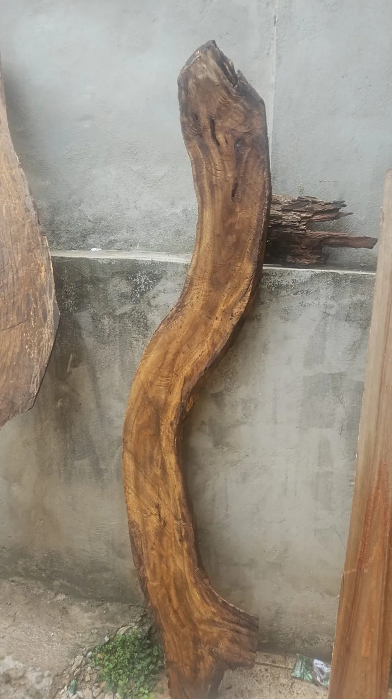
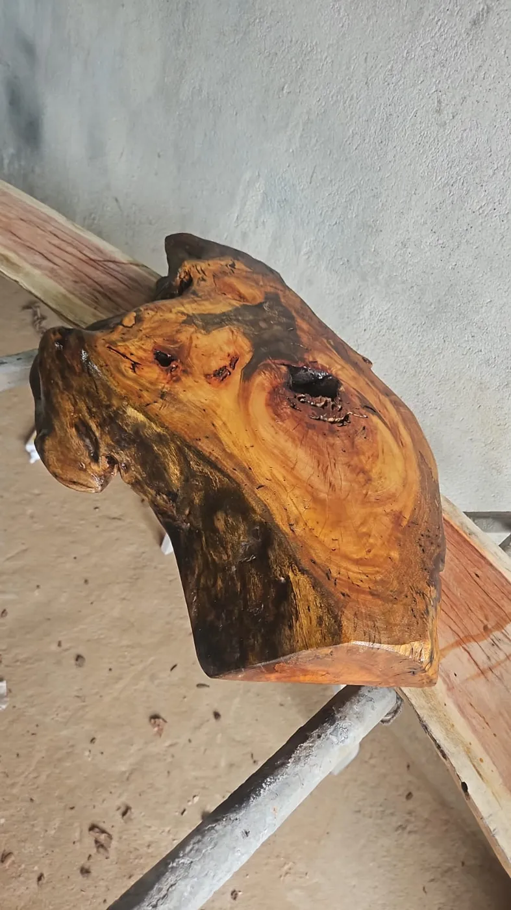
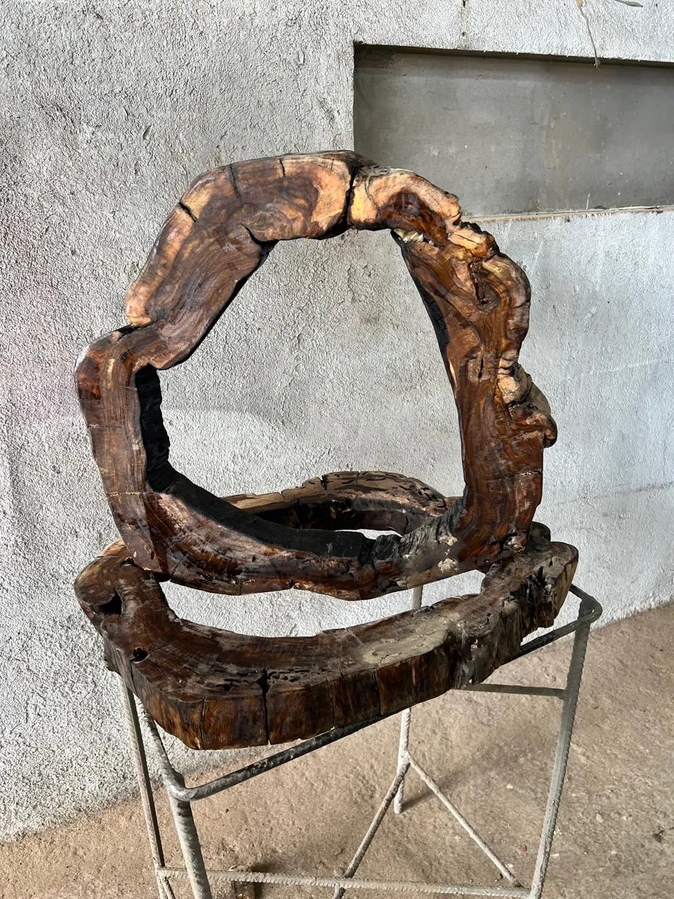
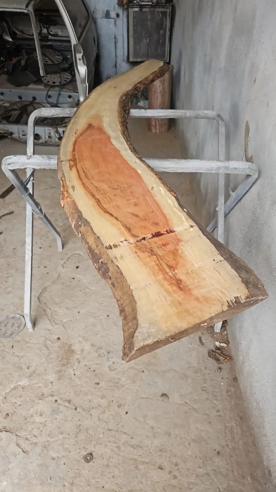
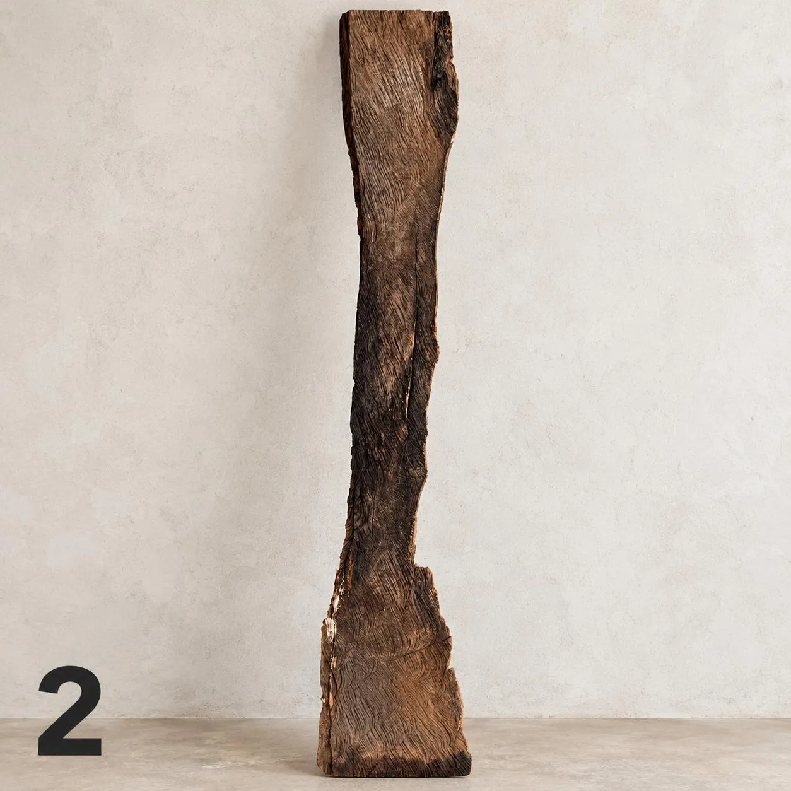
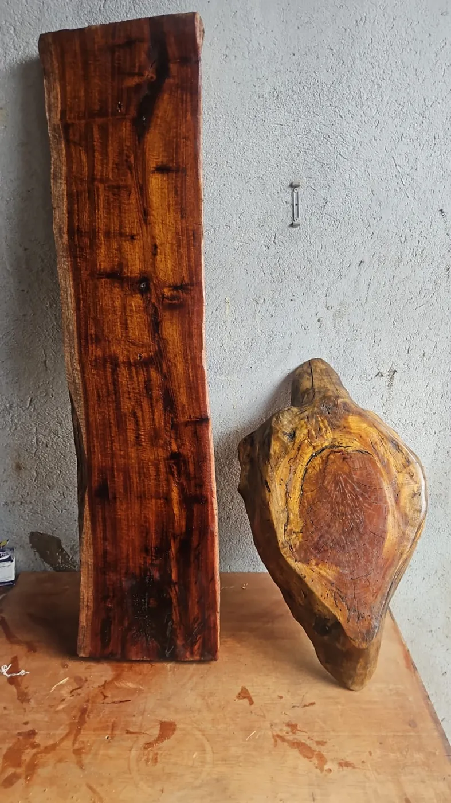

Lustres artesanais em madeira
A luz que conta
uma história.
Madeira bruta, ferro e luz quente. Cada lustre da Rustik nasce de um tronco diferente, por isso nenhuma peça é igual à outra.

Madeira
Troncos e pranchas escolhidos um a um, com veios, nós e marcas do tempo.
Ferro
Correntes, ferragens e bocais que dão estrutura e o toque rústico.
Luz quente
Lâmpadas de filamento que transformam qualquer ambiente em aconchego.
Nossas peças
Feitas para serem o centro do ambiente
Pendentes, barras com várias lâmpadas, anéis de madeira e colunas. Toque numa foto para ampliar.
Do tronco à luz
Como um lustre Rustik é feito
Nada sai de linha de produção. Cada peça passa pelas mãos da oficina do começo ao fim.
-

ISeleção da madeira
Buscamos troncos e pranchas com formato e veios que contam história.
-
II
Queima e lavagem
A superfície é queimada e lavada a jato. Isso realça os veios e deixa o acabamento escuro e marcante.
-

IIIAcabamento
Lixamento e acabamento à mão revelam as cores naturais da madeira.
-
IV
Montagem e luz
Ferragens, fiação e lâmpadas de filamento. A peça está pronta para iluminar.
Peça única, de verdade
Escolha a madeira do seu lustre
Na oficina temos troncos e pranchas esperando para virar luz. Você pode escolher a peça, e a gente desenha o lustre no tamanho do seu ambiente.
Ver madeiras disponíveis





Como pedir
Do primeiro “oi” à luz acesa
- 1
Chame no WhatsApp
Conte onde o lustre vai ficar: sala, mesa de jantar, área gourmet, varanda.
- 2
Escolha modelo e madeira
Mandamos opções de madeira e de modelo, com medidas e quantidade de lâmpadas.
- 3
Produção à mão
Com o orçamento aprovado, a peça é feita na oficina, do jeito combinado.
- 4
Luz acesa
Seu lustre pronto para iluminar, com um pedaço de natureza dentro de casa.
Vamos acender a luz do seu ambiente?
Orçamento sem compromisso pelo WhatsApp.
Falar no WhatsApp · (31) 98643-3260